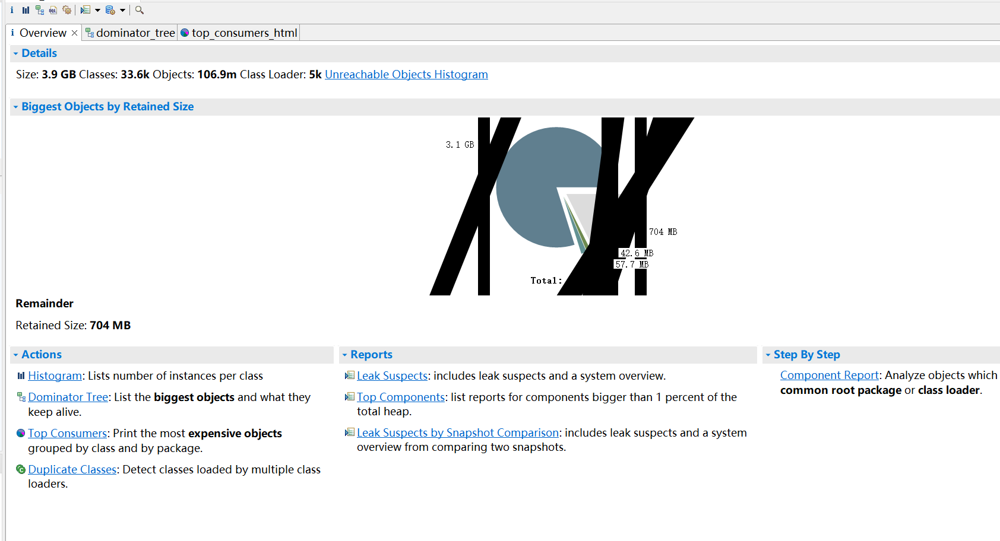

title:记一次Drool使用不当导致的OOM异常
tag:项目实战
记一次Drool使用不当导致的OOM异常
问题：
李宁项目属于两个服务进行集群部署，在25号时候，66，67两个ip都出现tomcat假死现象，组件日志均有打印，接口无法访问，定时任务不跑。
问题分析：
分析一：
当时认为假死是程序中有死锁或者死循环之类的问题导致，但是无依据，遂让实施拉取25号的66ip的dump文件，（67的为了线上继续运行，先重启解决）。
拉取到dump文件后，先使用jdk自带的jvisualvm进行分析，看到发生了oom，报错信息如下：
1 | "ARTEMIS_TASK_CLUSTER_SCHEDULER_Worker-15" prio=5 tid=100 RUNNABLE |
经过查看代码分析，此处就是一个简单的quartz集群的查询字符串，不可能过大导致内存溢出，排除。
分析二：
经过jvisualvm查看，确实存在较大的内存占用，但是不直观，具体不明，查资料得知一个很强大👍的工具MAT。
MAT依赖于jdk11，此外需要修改MemoryAnalyzer.ini文件，指定jdk路径以及加大内存。
1 | -startup |
1.将dump文件导入MAT，分析得到饼状图，看到有一个占据这3.1GB的大对象存活
 2. 点击查看Dominator Tree，查看大对象
查看定位到大对象是和drools相关的statefulSeesions,属于kieBaseMap内置的一个HashSet.

大对象定位到后进行代码分析
drools有状态会话时，必须调用dispose()方法，以确保没有内存泄漏。代码中相关dispose的调用在执行规则后调用，当kieSession.fireAllRules();出错时，即规则代码出错时，会抛异常跳出当前方法而导致跳过dispose（）方法的调用，发生内存泄露。
1
2
3
4
5
6
7private static void helperList(String key, List<Object> gList) throws ClassNotFoundException {
KieSession kieSession = getSession(key);
kieSession.setGlobal(GLOB_LIST, gList);
kieSessionSetGlobalServiceList(key,kieSession);
kieSession.fireAllRules();
kieSession.dispose();
}验证，若出现大量的异常，则会在外层被catch住进行日志输出。
1 | public static List<Object> droolsHelperListByKey(String key, Object... objects) { |
日志搜索：

至此，分析结束。
总结
对于资源类的数据，务必要保证资源的释放操作。